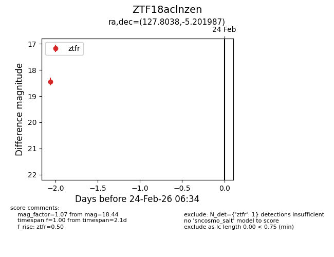
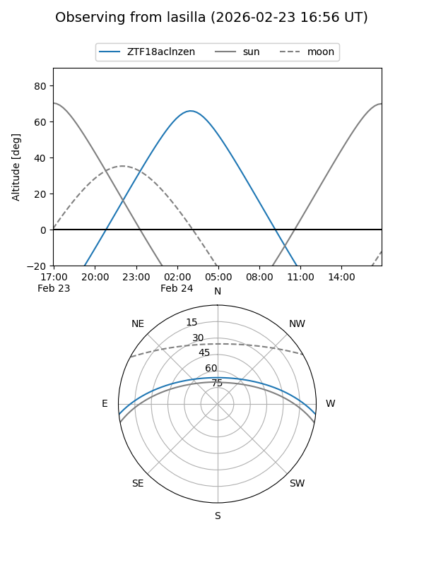
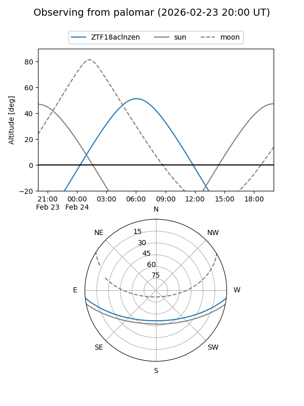

ZTF18aclnzen
Target ZTF18aclnzen at 2026-02-24 09:08
Aliases and brokers:
FINK: link
Lasair: link
ALeRCE: link
alt names
ZTF18aclnzen (ztf,fink_ztf)
Coordinates:
equatorial (ra, dec) = 127.8038,-5.20199
equatorial (HMS+DMS) = 08:31:12.90,-05:12:07.15
galactic (l, b) = (229.7074,+19.41768)
Flags:
Photometry:
last ztfr=18.44
1 ztfr detections
Lightcurve

Visibility


Additional plots